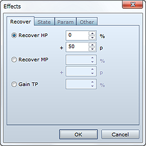

The Effects setting for skill and item data defines the effects to apply to the target character when an actor/enemy uses the skill/item in question.
The following thirteen types of effects can be applied. Skills/items with complex effects can be defined by setting multiple effects.

To set an effect, double-click a blank area within the field. In the Effects dialog box that appears, select the type of effect to set and then specify its target and the magnitude of the effect.
The effect you set will be displayed in the Effects list. You can edit the settings you made by clicking an effect in the list. And in the shortcut menu that appears when you right-click an effect, you can perform such operations as copying and deleting settings.
Restores HP (adds HP to the current value). Specify the recovery value as sum of the percentage (0 to 100%) of the target character's max HP and a set value (1 to 9999). To specify either one as the standard value, set the value of the other to "0". When setting this effect for items, the recovery multiplier of the user's Medicine Lore sp-parameter is applied.
Restores MP (adds MP to the current value). Specify the recovery value as sum of the percentage (0 to 100%) of the target character's max MP and a set value (1 to 9999). To specify either one as the standard value, set the value of the other to "0".
Restores TP (adds TP to the current value). Specify the recovery value as a percentage (0 to 100%) of the target character's max TP.
Adds a state. Specify the target state and the rate of success (0 to 1000%). Setting a value higher than 100% results in a success rate higher than the inherent effectiveness.
Removes a state. Specify the target state and the rate of success (0 to 100%).
Raises the fluctuation level of a parameter in combat by one. Specify the target parameter and number of turns (1 to 1000) the effect will last. The fluctuation level varies between -2 and +2, and the change in the value of the original parameter is 25% per level.
Lowers the fluctuation level of a parameter in combat by one. Specify the target parameter and number of turns (1 to 1000) the effect will last. The fluctuation level varies between -2 and +2, and the change in the value of the original parameter is 25% per level.
Returns a parameter to its original fluctuation level if it has been buffed.
Returns a parameter to its original fluctuation level if it has been debuffed.
Escape is the only setting available. Allows the target character to escape from battles. No EXP will be earned by actors to which this effect is applied.
Permanently raises a parameter. Specify the target parameter and the value to add (1 to 1000).
Allows a character to learn the specified skill. This effect is not applied to enemies.
Runs the specified common event. This effect can only be set once per data type.